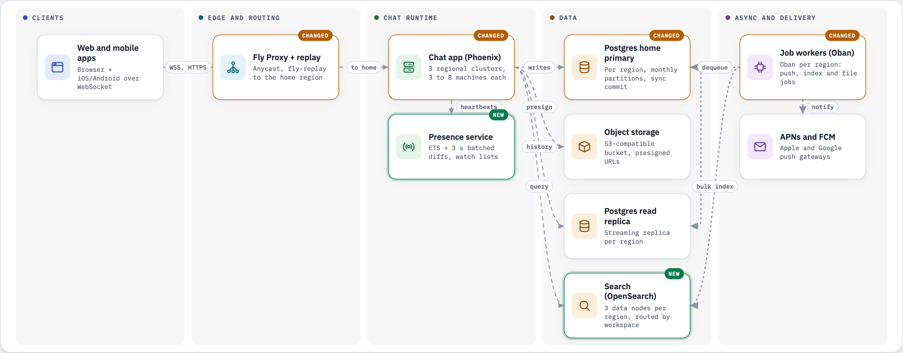

archladder · examples
System designs that climb from 1k to 10M users
Each page below was generated by the archladder agent skill from a fictional brief and recorded interview answers. Pick a tier, click any component for its role, alternatives, failure modes and what breaks next.

Read-heavy · bursty slot releases
Grocery delivery app
Delivery slots that must never oversell, nightly picking, live van tracking.
Search-heavy · supplier syncHotel booking marketplace
200 searches per booking, channel-manager updates, no double-booked last room.
Two-way sockets · fan-outTeam chat app
Ordered messages, presence and typing, 50k-member channels, multi-tenant workspaces.
Get archladder on GitHub · MIT licence · Fictional products, not affiliated with any company.